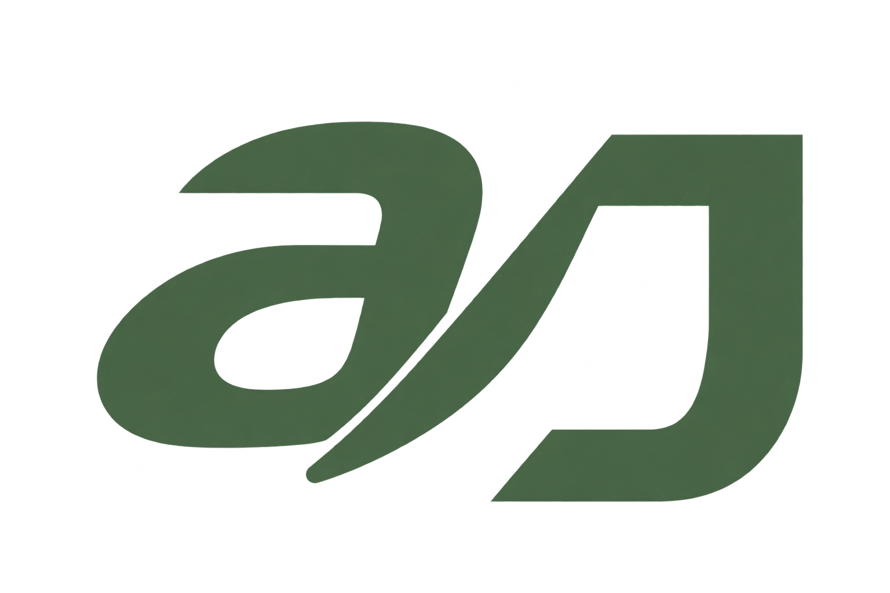

The reference, cleaned up.
The gold line is removed, and the pointed end of 刀 at the junction with a is shortened and softened.

SMALL-SIZE PREVIEW
Transparent background
Transparent background
The gold line is removed, and the pointed end of 刀 at the junction with a is shortened and softened.
